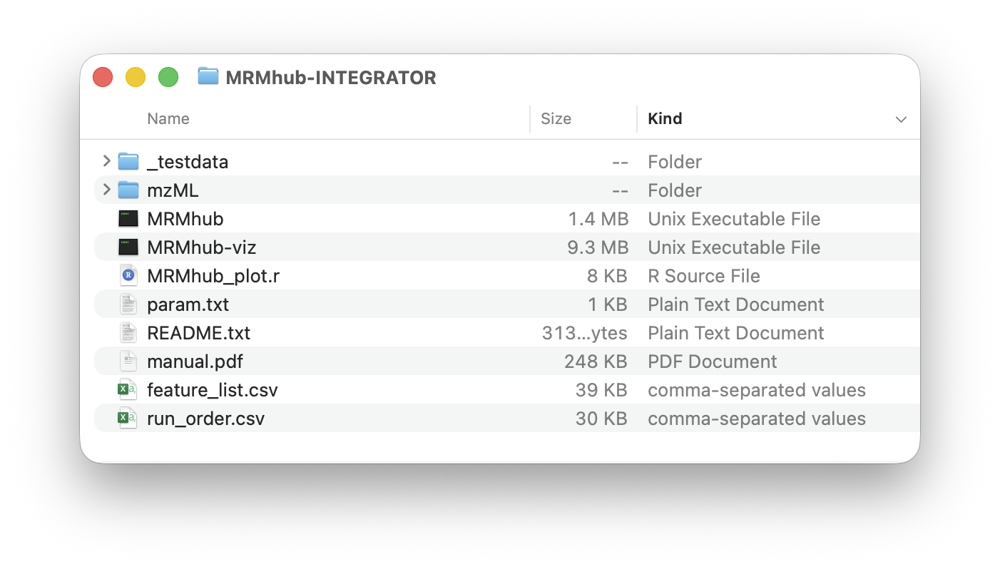
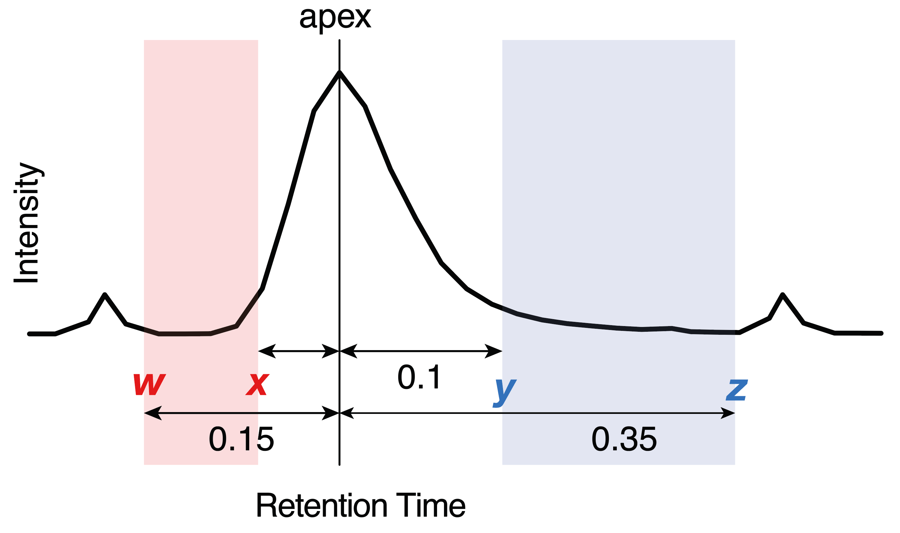
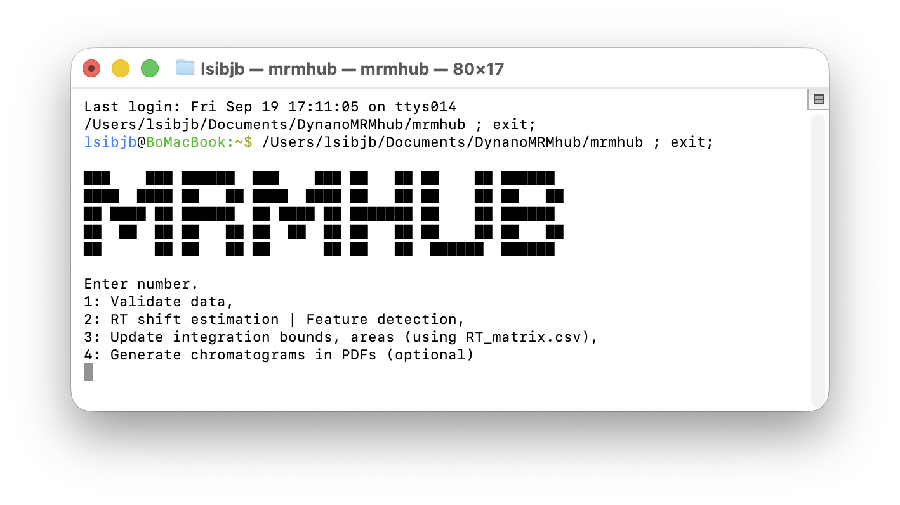
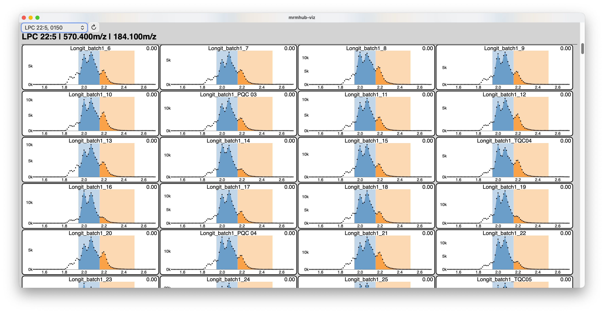

Preparation of MRM raw files
INTEGRATOR uses mzML files as input. Users can use the MSconvert tool, available as part of the Proteowizard software to convert proprietary raw data files (.wiff for SCIEX/Watersm, .raw files for Thermo Fisher, .d folders for Agilent, etc) into mzML format. See the MSconvert Instructions for details.
Installation MRMhub app
The INTEGRATOR module comes with pre-compiled binaries for Windows OS and Mac OS X, which can be download from https://github.com/SLINGhub/MRMhub/releases. Uncompress the downloaded file and move the folder to the desired location. The folder comprises following files and subfolders: MRMhub is the main application, the MRMhub-viz is an application to review the peak integration results. The input files required by the MRMhub application are feature_list.csv, run_order.csv, and param.txt. The mzML folder is used to store the MS raw data files. All of these explained below. Futhermore, this distribution contains a test dataset, with a complete set of input and raw data files. The MRMhub_plot.r is an R script used to generate the PDFs. It can be modified to tailor for specific layouts and design features of the plots.

Input files
Global parameters (param.txt)
The software requires global parameter file (param.txt by default), which points the software to the required information for a given experiment.
| P arameter | Description | Default |
|---|---|---|
| mzML_files | Location of mzML files to be used for peak integration | mzML |
| batch_info | Input file with mzML file names and meta information (see below) | batch_info.csv |
| transition_list | Input file with MRM transition information (see below) | feature_info.csv |
| peak_width | [w, x, y, z] define allowed integration bounds: left = w–x min, right = y–z min from apex (see below). |
[0.17, 0.05, 0.1, 0.35] |
| num_threads | Number of CPU threads to be used for integration task. | 2 |
| mz_tol | Tolerance between indicated m/z and detected m/z values | 0.06 |
| RT_tol | Tolerance between indicated RT and detected RT. Note: This is a key setting in processing or complex chromatograms. | 0.1 |
| RT_shift | [x, y] indicate that RT drift is at most x minutes left and y minutes right of the peak in the reference samples | [-0.2, 0.2] |
| RT_ shift_bound | Maximum allowed RT drift between adjacent samples | 0.1 |
Sample list (batch_info.csv)
This file defines the data files and their processing order. mzML files present in the data folder (mzML by default) but listed here will be ignored. Columns containing required information for each data file are marked in bold.
| Column | Description |
|---|---|
| file name | The mzML file names to be processed, which are in the folder defined under `mzML_files` in the param.txt file. Must include the .mzML file extension. |
| batch | The analysis batch identifier to which the file belong to. This value has no function in the INTEGRATOR, but the value is included in the result. |
| sample _type | The sample (QC) type of the corresponding sample. Blanks must be labeled with text containing BLK, as these are processed differently (see below). For all other cases, any sample type may be defined, and the information will be forwarded to the integration results. The field may also be left empty. Use of the default MRMhub QC types (see MRMhub Data Identifiers) is recommended to ensure seamless integration with the QUANT module. |
| reference | Indicates that this sample will be used as reference for RT shift estimation (see below). Label with x. |
Transition/Feature list (transition_list.csv)
This file defines the transitions to be processed and which features to be integrated. Transitions defined in the mzML files, but not in this file will be ignore. Columns with required information for each feature are marked in bold.
This file specifies the transitions to be processed and the features to be integrated for each transition. Transitions present in the mzML files but not listed here will be ignored. Columns containing required information for each feature are marked in bold.
| Column | Description |
|---|---|
| Compound Name | Feature (analyte) identifier name. Must be a unique value, identifying typically a single peak. Multiple distinct features can be defined for a transition. |
| Transition Name | Transition identifier. Can be repeated values. |
| ISTD | The internal standard feature assigned to the corresponding compound. This value has currently no function in the INTEGRATOR modules, but will be included in the results and will be read in by the QUANT module. Can be left empty, but if defined must correspond to a defined Compound Name. |
| Precursor Ion | The m/z value of the precursor ion. Must match the corresponding value in the mzML file within the toleance given via mz_tol in the param.txt file. |
| Product Ion | The m/z value of the product ion. Must match the corresponding value in the mzML file within the toleance given via mz_tol in the param.txt file. |
| RT | The expected retention time of the corresponding feature, given in minutes. |
| uniform_width | Either yes or no (default). If yes, the peak boundaries are set to the median of the results from the automatic border determination. |
| left integration bound | Sets fixed left peak border for all samples, in minutes (with reference to the reference sample) |
| right integration bound | Sets fixed right peak border for all samples, in minutes (with reference to the reference sample) |
| peak width | [w, x, y, z] define allowed integration bounds: left = w–x min, right = y–z min from apex (see below). Note: This overwrites the globally defined peak width (param.txt). See below. |
| Remarks | Used to document integration settings |
Recommendations for setting peak integration parameters
The peak_width parameter, defined globally in param.txt and optionally per feature in the Transition List, is a key setting for automated integration of complex chromatograms. Values are specified in the format [w, x, y, z], where the ranges w–x and y–z define the allowed windows for the left and right peak borders, respectively. The integration algorithm is constrained to set peak start and end points within these ranges, even if its automatic boundary detection would otherwise extend beyond them.
Too narrow ranges in the peak_width parameter may result in incomplete integration of peaks, especially when there is tailing or when the peak widths are not stable. To wide ranges may results in inclusion of smaller peak adjacent to the peak to be integrated. We suggest to use a setting that fits the majority of the peaks in the dataset globally via the param.txt file and then use per-feature settings for convoluted, asymmetric or otherwise broadened peaks. Narrower per-feature values may be used when nearby interferences are not recognized as separtaed peaks and are therefore are co-integrated.
Too narrow ranges may lead to incomplete peak integration, especially in cases of peak tailing or unstable peak widths. Too wide ranges may result in inclusion of smaller adjacent peaks. We suggest defining a global setting inparam.txt that suits the majority of peaks in the dataset, and applying per-feature settings for convoluted, asymmetric, or broadened peaks. Narrower per-feature ranges can also be used when nearby interferences are not recognized as separate peaks and are therefore co-integrated

Set the uniform_width parameter to true for features where integration was deemed correct in the majority, but incorrect or inaccurate in a minority of samples.
Use fixed left/right left integration bound times for cases automated integration and fine-tuning of weak width settings did not correctly and conistently integrated convoluted peaks or peaks with nearby interferences. The use of these hard border settings is recommended only as a last resort, as hard border may require re-adjustment when used in processing of other datasets of the same analytical method. Note: These defined borders will still be adjusted for retention time shifts.
Running MRMhub INTEGRATOR
Upon execution, the software launches a command line prompt with four different menu options. For new datasets, the steps 1 - 3 are applied sequentially. The final step 4 is optional and only used when integration results as PDFs files are needed.

Step 1 (Data Validation)
The first step verifies the files and information provided by the user in the input files. Inconsistencies are reported via the text files, which are saved into the directory as the MRMhub application. The files are are only generated when issues were identified.
-
missing_files.txtlists mzML files that are present in the data folder but not listed in the Sample List, as well as files listed in the Sample List but absent from the data folder. -
missing_compounds.txtreports transitions defined in the Transition List but not found in all mzML files. Note: Transitions present only in a subset of the mzML files are currently not processed. -
missing_details.txtreports transitions present in all mzML files, but not defined in the the Transition Lis
Step 2 (Peak Finding)
The second step runs the peak finding and picking algorithm. The result of this step is a table with identified peaks (features) with their left and right peak borders in each sample. This table is saved as a CSV file RT_matrix.csv into the same folder as the application and is required for step 3.
The user may further refine these integration bounds per transition and sample basis, before proceeding with the actual peak integration in step 3. For a new dataset, we recommend proceeding directly with peak integration directly, followed by visualization of the results using steps 3 (and 4) and only then to manually adjust specific integration borders. However, we generally discourage users from doing so, unless certain integration can only be achieved through manual intervention.
Warning: Each time step 2 is executed, RT_matrix.csv is overwritten, and any manual modifications made by the user will be lost.
Step 3 (Peak Integration)
In the third step, peaks integration of peaks identified in step 2 will be performed and corresponding results saved in following default output files:
-
quant_raw.csvA wide format table with peak areas. Additionally the top 3 rows contain the precursor and product m/z and peak apex retention time values. -
long.csvA long format table contain peak area,s height, peak apex retention time, FWMH (Full Width at Half Maximum) and integration borders. Additionally, the corresponding precursor and product m/z values, the analysis time stamp (extracted from the mzML files) as well as the metadata from the input files (i.e. sample type, ISTD, batch identifier) are also included. -
miscA folder containing the peak integration results in a binary format, which is used by the visualizer application MRMhub-viz and in step 4.
At this point, the user can launch the integration visualizer application MRMhub-viz (see also below) to inspect the integration results, and revise global and per-feature integration parameters (via param.txt and Transition List) and re-attempt peak integration via steps 2 and 3.
Once automated integration is deemed optimized, final manual adjustments to individual peaks can be made in the RT_matrix.csv (see Step 2). After these optional manual adjustment, the final peak integration is performed by re-running step 3.
Step 4 (Generate PDF results)
The fourth step produces integration results into PDF files, which is an optional step. This step creates three folder with different types of results:
-
by_transition: Contains one PDF per transition, with chromatograms plotted for each sample. Only transitions with at least one feature (peak) exceeding the minimum intensity threshold value are included here (seeby_transition_low). -
by_transition_low: Contains PDFs of transitions where none of the integrated features (peaks) had an area exceeding the minimum intensity threshold defined by the constantlow_iin the providedMRMhub_plot.rR script. -
by_sample: Contains one PDF file, with all transitions plotted of the first sample set as RT reference. {CORRECT?}
For efficiently review PDFs on macOS, open the PDF folder, press Space to start Quick Look, then use the up/down arrow keys to move to between transitions (files). Use the scroll wheel or trackpad to scroll through each PDF.
Note: In large-scale projects, generating many large PDF files can take considerable time depending on computer performance and the number of cores used. The number of cores use to generate the PDFs can be adjusted via the constant ncores in the provided MRMhub_plot.rscript.
MRMhub-viz: Integration Vizualizer
The MRMhub-viz application is a lightweight, standalone, interactive tool for reviewing peak integration results generated by the MRMhub application (see Step 3). It is located in the same folder as the MRMhub application and launched like a regular application. The displayed transition can be selected using the dropdown menu in the top-left corner, and when moving the mouse over the chromatograms the exact retention time is shown. This is useful when defining fixed peak borders in the Transition List file (see Transition List above).

Sharing of Results and Integration Workflow
In addition to the CSV files containing the peak area results, the complete set of raw data, input files with all integration parameters, and individual integration results can be shared together with the lightweight MRMhub application (~1 MB). This allows others to fully inspect, reproduce, and modify the raw data processing of your dataset.
For documentation, individual integration results can be provided as PDF files. Alternatively, they can be explored interactively using the standalone MRMhub-viz application (~10 MB), which can also be included in the shared dataset.